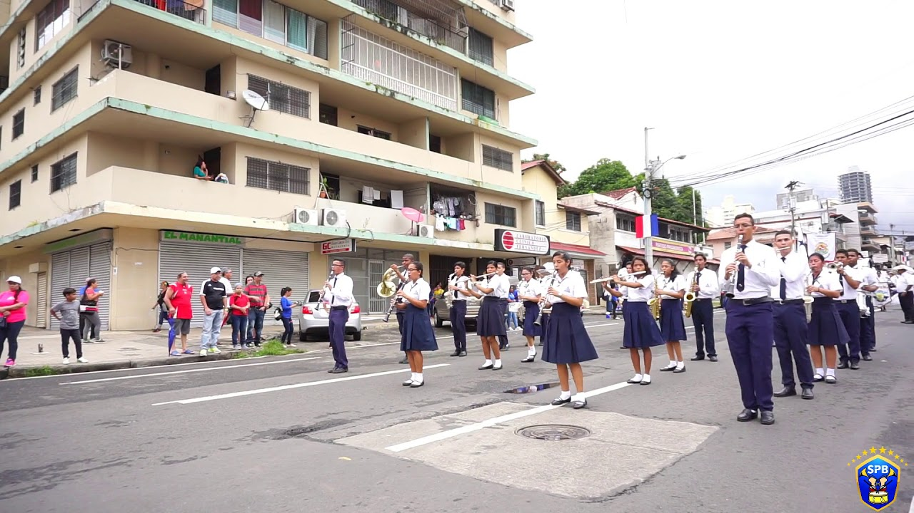
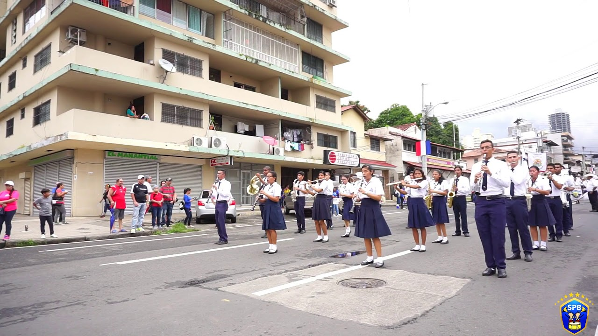

1. HISTORIA: Archivo Desbloqueado
El Colegio José Antonio Remón Cantera es una institución educativa pública de Panamá que fue creada mediante el Decreto n.° 140 del 5 de marzo de 1971, bajo la administración del presidente Demetrio Basilio Lakas. Inicialmente se fundó como un Primer Ciclo de educación secundaria (Premedia) para descongestionar a otros colegios del área, y debe su nombre a José Antonio Remón Cantera, militar y político panameño que fue presidente de la República (1952-1955) y que fue víctima de un magnicidio. A lo largo de su historia, el colegio ha evolucionado para ofrecer educación a nivel de Premedia y Media (7.º a 12.º grado), enfocándose en brindar una educación de calidad que desarrolle habilidades académicas y sólidos principios cívicos y éticos en la juventud panameña, a pesar de las luchas que la comunidad educativa ha mantenido por la construcción de un nuevo edificio para modernizar sus instalaciones.
2. Misión y Visión: Objetivo Principal
Mision: Formar estudiantes responsables, críticos y creativos, capaces de aportar al desarrollo de la comunidad.
Vision: Ser un colegio líder en innovación educativa y formación de ciudadanos íntegros.
3. Actividades y Bachilleratos: Árbol de Habilidades
El colegio ofrece diversas actividades extracurriculares como deportes, arte y música, así como proyectos comunitarios.
- Bachiller en Ciencias: Es la modalidad tradicional orientada hacia las ciencias naturales. Destinada a estudiantes que tienen interés en carreras universitarias científicas o tecnológicas.
- Bachiller en Ciencias con Énfasis en Informática: Variante del Bachiller en Ciencias que incorpora áreas tecnológicas de informática: se profundiza más en competencias de tecnología de la información y comunicación (TIC).
- Bachiller en Letras con Énfasis en Idiomas: Enfocada al área humanística, con hincapié en idiomas. Ideal para estudiantes con interés en lenguas, literatura, comunicación, traducción, etc.
- Bachiller en Educación Física-Deporte y Salud Integral: Es curricularmente innovador dentro del sistema educativo nacional. Está orientado al desarrollo de competencias deportivas, recreativas, de salud integral.
Información de Contacto: Punto de Guardado
Teléfono: 6606 1331